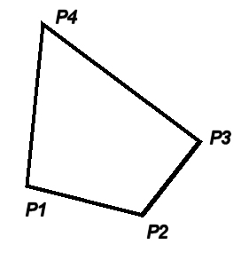

Class Quadrilateral
public final class Quadrilateral
extends java.lang.Object
Quadrilateral class provides a container for a 2D quadrilateral.
Note that a counter clockwise specified quadrilateral is preferred:

Note that this class cannot be subclassed!
- Version:
- 09/12/2004
- Author:
- Sven Maerivoet
- See Also:
Quadrilateral,QuadMapping,QuadToQuadMapping
-
Field Summary
Fields Modifier and Type Field Description java.awt.geom.Point2D.DoublefP1The quadrilateral's first point.java.awt.geom.Point2D.DoublefP2The quadrilateral's second point.java.awt.geom.Point2D.DoublefP3The quadrilateral's third point.java.awt.geom.Point2D.DoublefP4The quadrilateral's fourth point. -
Constructor Summary
Constructors Constructor Description Quadrilateral()Constructs aQuadrilateralobject with all four 2D points equal to (0,0).Quadrilateral(java.awt.geom.Point2D.Double p1, java.awt.geom.Point2D.Double p2, java.awt.geom.Point2D.Double p3, java.awt.geom.Point2D.Double p4)Constructs aQuadrilateralobject with the four specified 2D points.Quadrilateral(Quadrilateral q)Constructs aQuadrilateralobject as a copy of anotherQuadrilateralobject. -
Method Summary
Modifier and Type Method Description voidclear()Sets all four 2D-points of thisQuadrilateralobject equal to (0,0).booleanisConvex()Returns whether or not thisQuadrilateralobject is convex shaped.booleanisScreenConvex()Returns whether or not thisQuadrilateralobject is convex shaped on the screen.voidpermuteCounterClockwise()Permutes all four 2D points of thisQuadrilateralobject counter clockwise.voidpermuteVertical()Permutes all four 2D points of thisQuadrilateralobject vertically.voidset(java.awt.geom.Point2D.Double p1, java.awt.geom.Point2D.Double p2, java.awt.geom.Point2D.Double p3, java.awt.geom.Point2D.Double p4)Sets all four 2D points of thisQuadrilateralobject equal to the specified points.voidset(Quadrilateral q)Sets all four 2D points of thisQuadrilateralobject equal to those of the specifiedQuadrilateralobject.Methods inherited from class java.lang.Object
clone, equals, getClass, hashCode, notify, notifyAll, toString, wait, wait, wait
-
Field Details
-
fP1
public java.awt.geom.Point2D.Double fP1The quadrilateral's first point. -
fP2
public java.awt.geom.Point2D.Double fP2The quadrilateral's second point. -
fP3
public java.awt.geom.Point2D.Double fP3The quadrilateral's third point. -
fP4
public java.awt.geom.Point2D.Double fP4The quadrilateral's fourth point.
-
-
Constructor Details
-
Quadrilateral
public Quadrilateral()Constructs aQuadrilateralobject with all four 2D points equal to (0,0). -
Quadrilateral
public Quadrilateral(java.awt.geom.Point2D.Double p1, java.awt.geom.Point2D.Double p2, java.awt.geom.Point2D.Double p3, java.awt.geom.Point2D.Double p4)Constructs aQuadrilateralobject with the four specified 2D points.Note that internally, the four specified points are referenced; this means that any changes to the specified points are reflected in the internal
Point2D.Doubleobjects.- Parameters:
p1- the quadrilateral's first point (shallow copy)p2- the quadrilateral's second point (shallow copy)p3- the quadrilateral's third point (shallow copy)p4- the quadrilateral's fourth point (shallow copy)- See Also:
Quadrilateral(),Quadrilateral(Quadrilateral),set(Point2D.Double,Point2D.Double,Point2D.Double,Point2D.Double)
-
Quadrilateral
Constructs aQuadrilateralobject as a copy of anotherQuadrilateralobject.This is the copy constructor.
Note that internally, the four specified points are referenced; this means that any changes to the specified points are reflected in the internal
Point2D.Doubleobjects.- Parameters:
q- the quadrilateral's 2D-datapoints to shallow copy- See Also:
Quadrilateral(),Quadrilateral(Point2D.Double,Point2D.Double,Point2D.Double,Point2D.Double),set(Quadrilateral)
-
-
Method Details
-
clear
public void clear()Sets all four 2D-points of thisQuadrilateralobject equal to (0,0). -
set
public void set(java.awt.geom.Point2D.Double p1, java.awt.geom.Point2D.Double p2, java.awt.geom.Point2D.Double p3, java.awt.geom.Point2D.Double p4)Sets all four 2D points of thisQuadrilateralobject equal to the specified points.Note that internally, the four specified points are referenced; this means that any changes to the specified points are reflected in the internal
Point2Dobjects.- Parameters:
p1- the quadrilateral's first point (shallow copy)p2- the quadrilateral's second point (shallow copy)p3- the quadrilateral's third point (shallow copy)p4- the quadrilateral's fourth point (shallow copy)- See Also:
set(Quadrilateral)
-
set
Sets all four 2D points of thisQuadrilateralobject equal to those of the specifiedQuadrilateralobject.Note that internally, the four specified points are referenced; this means that any changes to the specified points are reflected in the internal
Point2D.Doubleobjects.- Parameters:
q- the quadrilateral's 2D-data points to shallow copy- See Also:
set(Point2D.Double,Point2D.Double,Point2D.Double,Point2D.Double)
-
permuteCounterClockwise
public void permuteCounterClockwise()Permutes all four 2D points of thisQuadrilateralobject counter clockwise.After the operation, the 2D points have changed as follows:
- fP1 → fP2
- fP2 → fP3
- fP3 → fP4
- fP4 → fP1
- See Also:
permuteVertical()
-
permuteVertical
public void permuteVertical()Permutes all four 2D points of thisQuadrilateralobject vertically.After the operation, the 2D points have changed as follows:
- fP1 → fP3
- fP2 → fP4
- fP3 → fP1
- fP4 → fP2
This corresponds to two consecutive counter clockwise permutations.
- See Also:
permuteCounterClockwise()
-
isConvex
public boolean isConvex()Returns whether or not thisQuadrilateralobject is convex shaped.Note: it is assumed that the X axis points to the right and the Y axis points upwards.
- Returns:
trueif thisQuadrilateralobject is convex shaped,falseotherwise- See Also:
isScreenConvex()
-
isScreenConvex
public boolean isScreenConvex()Returns whether or not thisQuadrilateralobject is convex shaped on the screen.Note: it is assumed that the X axis points to the right and the Y axis points downwards.
- Returns:
trueif thisQuadrilateralobject is convex shaped on the screen,falseotherwise- See Also:
isConvex()
-